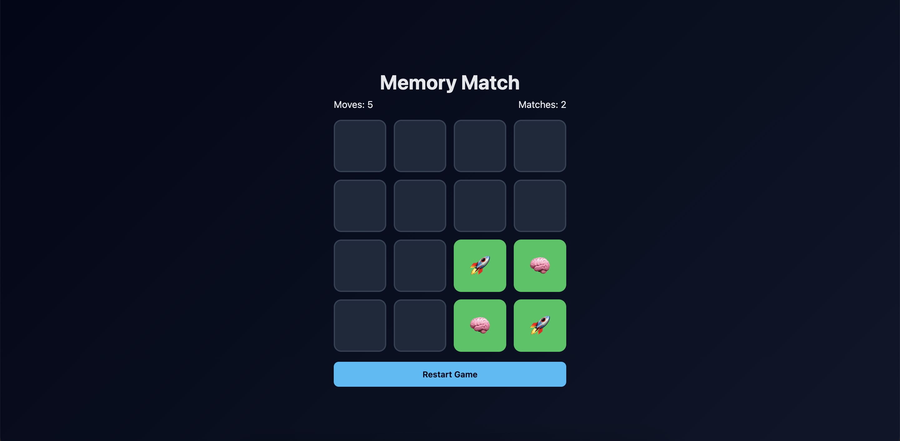

July 2025
Project Description
This project is a JavaScript-based memory matching game where users flip cards to find matching pairs. It demonstrates dynamic interaction and front-end skills using JavaScript.
- Developed a grid-based game board using HTML and CSS.
- Implemented card flipping, matching logic, and score tracking using JavaScript.
- Added basic animations and responsive design for different screen sizes.
- Tested and debugged game functionality for a smooth user experience.
Skills Learned
- JavaScript DOM Manipulation
- Event Handling & Logic Implementation
- HTML & CSS Layout for Interactive UI
- Debugging & Testing Interactive Web Applications
- Responsive Design Principles